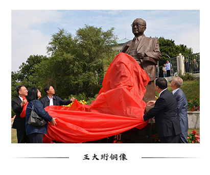
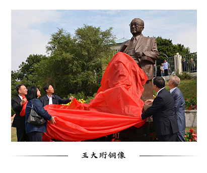
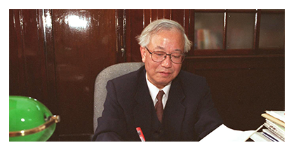
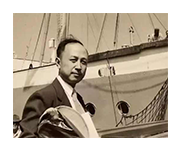
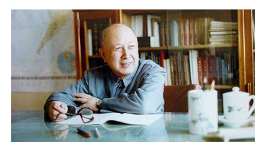
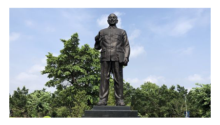

科学技术是第一生产力，国家高度重视人才，重视科技
中国的辉煌，迫切需要科技工作者们以科技创新来报国，以科研成果来报国
以科研实力来报国，用科技创新提升国家实力
五十年代后期,许多优秀的物理工作者,坚决服从国家需要,放弃自己熟悉的专业,投入到“两弹一星”的研制工作中去.改革开放以来,科教兴国的战略为物理学在中国的发展提供了新的机遇,注入了新的活力.
世界上第一个发现“反西格玛负超子”，27岁便获得德国柏林大学物理学博士学位。1964年，他独立地提出了用激光打靶实现核聚变的设想，是世界激光惯性约束核聚变理论和研究的创始人之一。参与了中国原子弹、氢弹原理突破及核武器研制的试验研究和组织领导，是中国核武器研制的主要奠基人之一。他长期从事高能物理、宇宙线、等离子体物理、受控热核反应的研究工作，为中国核科学技术的发展作出了重大贡献，曾获国家科技进步特等奖。1999年，中共中央、国务院、中央军委授予他“两弹一星功勋奖章”。
1961年，祖国希望他参与和领导原子弹研制，于是，从此他化名王京，隐形埋名17年，投身核研究。 在此后的若干年里，他不能在世界其他学术领域里崭露头角，也不能在国际舞台上交流自己的研究成果，更不能获得最前沿的科技信息，按照自己的兴趣去进行高深的探索。他再也不可能成为世界顶尖的科学家，失去了摘取诺贝尔奖的可能。 17年的时间，这位科学家化名王京，断绝了与外界的一切联系，全身心地投入到核武器的研制工作当中。
 

 王大珩——开创新中国光学事业的“追光者”
王大珩——开创新中国光学事业的“追光者”
他是“中国光学之父”，一手筹建的中国科学院仪器馆是中科院长春光机所的前身。直到如今，王大珩的精神依然是所里科研人员奋斗的指明灯。
中国第一片光学玻璃、第一台电子显微镜、第一台激光器、第一台大型光测装备的主持制作，第一个遥感科学规划的主持制订，中国工程院的建立……这些成就都离不开一个人名字，王大珩——中国光学事业的先行者，一位用毕生精力推动中国光学事业发展的科学家。
 纵“珩”一生1958年，王大珩带领他的团队以研制高精光学仪器的“八大件”而闻名全国科技界。它们是:一秒精度大地测量经纬仪，一微米精度万能工具显微镜，大型石英摄谱仪，中型电子显微镜，中子晶体谱仪，地形测量用多臂航摄投影仪，红外夜视仪以及系列有色光学玻璃。这是王大珩创办仪器馆以来所花费心血的结晶，也孕育了1961年中国第一台激光器在这里诞生以及后来做出更为重要的成绩。
毛主席在参观长春光学精密机械研究所的成果时，十分高兴地赞扬道:“中国的命运一经操在人民自己手中，就会像太阳升起在东方那样，以自己的辉煌光焰普照大地，任何人间奇迹都是会创造出来的。”
“863计划”的倡议人1986年3月3日，在经过一番商议后，王大珩、陈芳允、杨嘉墀、王淦昌等四位科学家联名给邓小平、胡耀邦等同家领导人上书，写下了题为《关于跟踪研究外闰战略性高技术发展的建议》的一封信。信中写道：“必须从现在抓起，以力所能及的资金和人力跟踪新技术的发展进程。须知，当今世界的竞争非常激烈，稍一懈怠，就会一蹶不振。此时不抓，就会落后到以后删不了身的地步……在整个世界都在加速新技术发展的形势下，我们若不急起直遍，后果是不堪设想的。”
钱学森——中国导弹之父学术上，他的代表作品《工程控制论》、《物理力学讲义》、《星际航行概论》、《论系统工程》等等著作至今依然闻名于世。在实践上，钱学森长期担任中国火箭和航天计划的技术领导人，对航天技术、系统科学和系统工程做出了巨大的和开拓性的贡献。被誉为“中国导弹之父”“中国火箭之父”“导弹之王”。正是钱学森的回国效力，让中国的“两弹一星”至少向前推进了二十年。毋庸置疑，两弹一星是钱学森及其团体为新中国做出最杰出的贡献。
“你们谁敢和我比试？”  我姓钱，但我不爱钱1994年，钱学森获得何梁何利基金奖，奖金为100万港元；2001年，他又获得了霍英东“科学成就终身奖”，奖金也是100万港元。据他的秘书兼学术助手涂元季回忆，这两笔奖金的支票还没有拿到手，钱老就让他代写委托书，将钱捐给祖国西部的沙漠治理事业。捐出奖金时，他说:“我姓钱 ，但我不爱钱。”
1935年，钱学森在麻省理工学院航空系学习初期，面对某些美国同学傲慢的讥笑中国愚昧落后，他不服气的挑战说:“中国现在是比你们美国落后，但是作为个人，咱们人比人，你们谁敢和我比试？”后来，只用了一点时间，他就获得了航空硕士学位，为中国人争了口气。
著名生物学家童第周再早年的日记中曾写下如此誓言:“中国人不是笨人，应该拿出东西来，为我们的民族争光！”钱学森再次证实了这一点。
  于敏——中国氢弹之父
于敏——中国氢弹之父
于敏的名字曾是绝密。他隐姓埋名几十年，直到1988年他的名字才得以解禁。他的一生，只有两次公开亮相：一次是1999年，国家授予“两弹一星”功勋奖章；另一次是2015年1月9日，国家科技奖颁奖，他成为最高科技奖的唯一获得者。
他在中国氢弹原理突破中解决了一系列基础问题，提出了从原理到构形基本完整的设想，起了关键作用；此后长期领导核武器理论研究、设计，解决了大量理论问题；对中国核武器进一步发展到国际先进水平作出了重要贡献。从20世纪70年代起，他在倡导、推动若干高科技项目研究中发挥了重要作用。
曾三次与死神擦肩而过1969年初，因奔波于北京和大西南之间，也由于沉重的精神压力和过度的劳累，于敏的胃病日益加重。当时，我国正在准备首次地下核试验和大型空爆热试验。那时他身体虚弱，走路都很困难，上台阶要用手帮着抬腿才能慢慢地上去。热试验前，当于敏被同事们拉着到小山冈上看火球时，已是头冒冷汗，脸色苍白。 直到1971年10月，上级考虑到于敏的贡献和身体状况，才特许他已转移到西南山区备战的妻子孙玉芹回京照顾他。一天深夜，于敏感到身体很难受，就喊醒了妻子。妻子见他气喘，赶紧扶他起来。不料于敏突然休克过去，经医生抢救方转危为安。后来许多人想起来都后怕，如果那晚孙玉芹不在身边……
开发团队：杨鸿 陈深 张燕琼